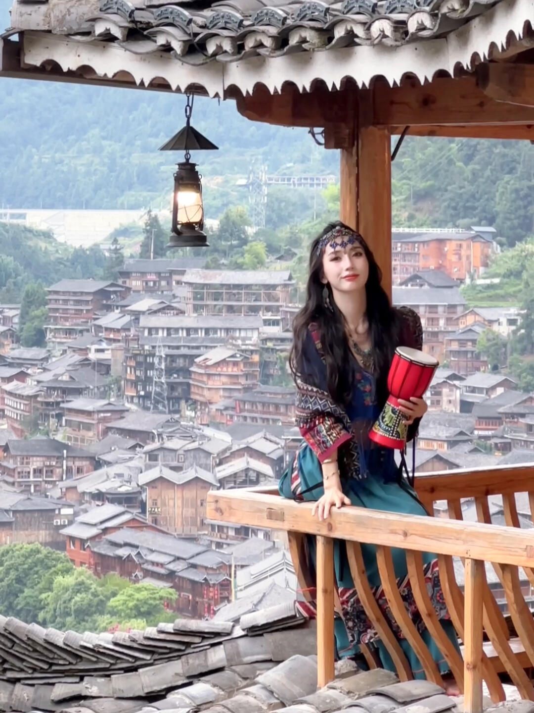

第 1 张 / 共 1 张
直觉
观景台的木檐、灯笼和苗寨层叠屋顶形成了很强的“旅行写真感”，人物站在右侧，既有环境交代，也有小红书式打卡氛围。
技法拆解
- 构图上利用屋檐做上方框架，背景苗寨铺满画面，地点辨识度很高。
- 人物略靠右是对的，但栏杆和柱子稍抢眼，身体下半部分被切得有些碎。
- 背景雾气偏亮，人物面部容易显暗，拍摄时需要给人脸适当补曝光。
- 灯笼是很好的前景元素，但位置可再靠左上，避免和人物视觉重心竞争。
实拍操作（佳能 R10）
模式拨盘选 Av 光圈优先，这类旅拍需要快速控制景深，让相机自动适配现场光。推荐 f/4-f/5.6，1/250s 以上，ISO 400-800，评价测光，人眼检测 AF，伺服 AF，区域对焦；若背景太亮，可曝光补偿 +0.3 到 +0.7EV 保住人脸。镜头建议 RF-S 18-150mm 用 35-50mm 段，或 RF 50mm F1.8 拍半身更干净。现场先让人物靠栏杆侧身，避开柱子压脸；等云雾柔光时拍；按快门时引导她微抬下巴、手扶栏杆或鼓，连拍抓自然表情。
后期思路
整体走“清透民族旅拍”方向：降低高光、提升阴影，让人脸和服饰更亮。背景可适度去雾、降饱和，人物用蒙版提亮肤色和眼神，保留苗寨木建筑的暖色质感。